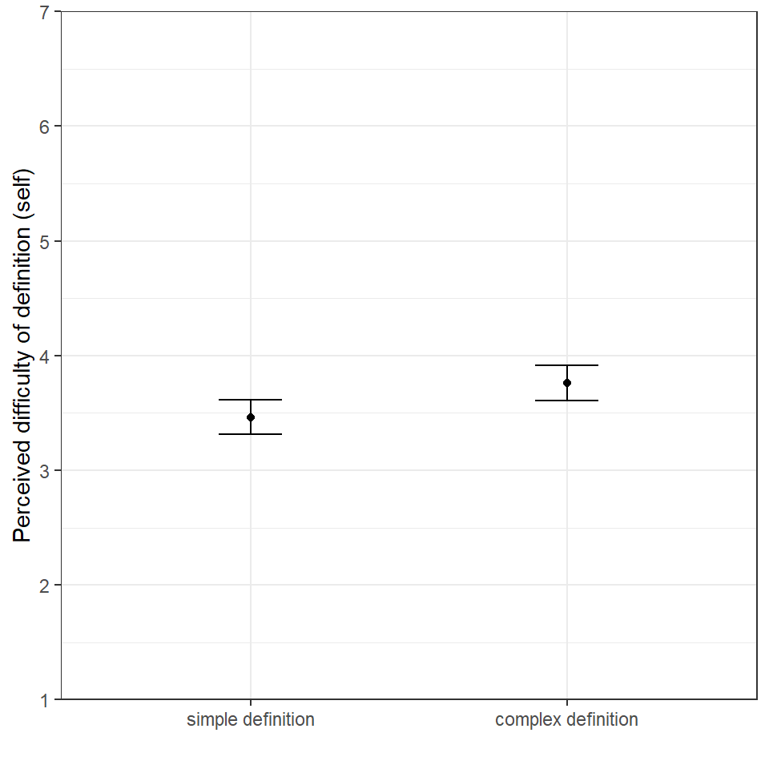

| Characteristic | Overall N = 1,1901 |
simple/fabric N = 3021 |
complex/fabric N = 2911 |
simple/makeup N = 2951 |
complex/makeup N = 3021 |
p-value2 |
|---|---|---|---|---|---|---|
| Age | 48 (17) | 50 (18) | 48 (17) | 49 (18) | 47 (16) | 0.31 |
| Gender | 0.35 | |||||
| male | 48% | 46% | 52% | 46% | 49% | |
| female | 52% | 54% | 48% | 54% | 51% | |
| Race (Non-White/White) | 0.71 | |||||
| non-white | 26% | 25% | 25% | 29% | 26% | |
| white | 74% | 75% | 75% | 71% | 74% | |
| Education | 0.075 | |||||
| Less than high school | 3.4% | 4.0% | 3.8% | 0.7% | 5.3% | |
| High school graduate | 27% | 27% | 25% | 28% | 27% | |
| Some college | 19% | 17% | 18% | 21% | 20% | |
| 2-year degree (e.g., associate degree) | 11% | 11% | 8.9% | 13% | 13% | |
| 4-year degree (e.g., bachelors degree) | 22% | 22% | 22% | 24% | 19% | |
| Post-graduate degree (e.g., graduate school, JD, MD, PhD) | 18% | 19% | 22% | 14% | 17% | |
| Income | 0.20 | |||||
| Less than $25,000 | 20% | 21% | 18% | 21% | 19% | |
| $25,000 to $49,999 | 25% | 25% | 25% | 28% | 24% | |
| $50,000 to $74,999 | 19% | 19% | 19% | 18% | 20% | |
| $75,000 to $99,999 | 11% | 8.3% | 8.6% | 11% | 14% | |
| $100,000 to $124,999 | 8.2% | 8.6% | 7.6% | 8.1% | 8.3% | |
| $125,000 to $149,999 | 7.9% | 11% | 8.3% | 7.5% | 5.3% | |
| $150,000 to $174,999 | 4.2% | 2.6% | 5.5% | 3.7% | 5.0% | |
| $175,000 to $199,999 | 1.9% | 2.3% | 2.1% | 1.0% | 2.3% | |
| $200,000 or more | 3.1% | 3.0% | 5.9% | 2.0% | 1.7% | |
| 1 Mean (SD); % | ||||||
| 2 Kruskal-Wallis rank sum test; Pearson’s Chi-squared test | ||||||
BioMADE Experiment: Definition Complexity and Issue
Data were collected by Qualtrics between August 29 and September 13, 2025. Of the final sample of 1,754, Qualtrics designated 1,190 responses as “good completes.”
The table below shows demographic information by experimental condition–none of the differences in the demographics between conditions are significant, which is indicative of random assignment to the experimental conditions.
1 Manipulation Checks
1.1 Perceived difficulty of self-understanding provided definition
The first manipulation check is a question about the perceived difficulty (be the respondent) of understanding the definition provided in the survey. The figure below shows mean levels of perceived difficulty of understanding the definition provided in the survey by simple vs. complex definition. The difference in mean levels of perceived difficulty was significant between the conditions (\(t = -2.67\), \(p = .008\)).

1.2 Perceived difficulty of other-understanding provided definition
The second manipulation check question asked respondents about their perceptions of how difficult it might be for others to understand the provided definition. The figure below shows mean levels of perceived difficulty that others might have understanding the definitions provided in the survey. The difference in mean levels of perceived difficulty was significant between the conditions (\(t = -3.13\), \(p = .002\)).

I was not sure what to do with the question about the terms used in the definition or the open-ended questions, which require coding.